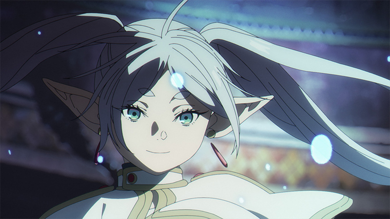

CINE DE ORO
HERMOSA ANIMACION, PARA UN PREMIO
Si buscas un anime que sea diferente al resto, y te haga reflexionar sobre la vida, y tenga una gran pizca de magia, FRIEREN es justo lo que necesitas
Si buscas un anime que sea diferente al resto, y te haga reflexionar sobre la vida, y tenga una gran pizca de magia, FRIEREN es justo lo que necesitas

¿A quien no le gustan las historias con heroes rotos, e invencibles que cambian al mundo?, este anime nos presenta a Frieren, una maga elfo que despues de haber vencido al rey gran demonio, nos muestra que pasa despues del final feliz.

Mùsica, historia, y personajes, son los tres elemntos que necesita un anime para poder encontrar el amor del publico, y Frieren ha arrasado con todo.